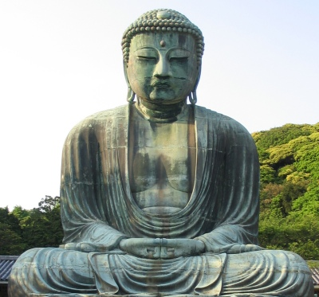

Sacred Texts Buddhism
Buy this Book at Amazon.com
|  | The Creed of Half Japanby Arthur Lloyd[1911] |
This is a scholarly study of the evolution of Mahayana Buddhism in Japan. Lloyd was particularly interested in how Eastern religions interacted with those in the west. A Christian clergyman and long-time resident in Japan at the turn of the 20th century, Arthur Lloyd felt that Buddhism has much in common with Christianity, including possible historical links. In this book he discusses doctrinal and narrative parallels between Mahayana Buddhism and early Christian, Gnostic, and Manichean beliefs.
The book is particularly strong in its exposition of the various Buddhist sects in Japan, with extensive material on Nichiren, including a translation of the Namudaishi and the Rissho Ankoku ron, two important Nichiren texts. He also discusses the Amida (Pure Land), Shingon and Zen schools. The historical account covers one and a half millennia of Japanese history, from the first entry of Buddhism in the fifth century via Korea, through the Nara, Heian, Gempei, Kamakura, Muromachi and the Tokugawa periods. If you are looking for a comprehensive volume which covers the development of modern Japanese Buddhism, this is an essential reference. This is also a great read for religious studies students and others interested in Buddhism and the development of eastern religions.--J. B. Hare, November 26th, 2008.